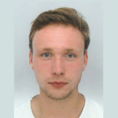
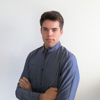

Le projet
Dans le cadre de notre formation, nous avons l'oportunitée de réaliser un projet alliant Conception Assistée par Ordinateur et Informatique. L’objectif de ce projet est le suivant, réaliser un produit modulable piloté par une interface Web. Dans notre cas, nous avons fait le choix de réaliser un drone modulable. Notre choix s’est arrêté sur ce produit puisque nous portons tous les trois de l’intérêt à l’univers des drones qui représente pour nous un des enjeux importants de l’industrie actuelle et futur.
Notre équipe
Voici notre équipe, composé de trois camarades de classe de deuxième année apprenti au sein de l'école d'ingénieur des mines de Nancy spécialité ingénierie de la conception (InSic - Saint-dié-des-Vosges). composé de trois membres présenté succinctement ci-dessous.

Alexandre GOUNAND
Apprenti ingénieur d'essais en aérodynamique chez ONERA (the french aérospace lab) aux Mines de Nancy - Insic en deuxiéme année, formation d'ingénieur génie mécanique spécialité de la conception.
e-mail contactAlban BELLOIR
Apprenti ingénieur d'essais en aérodynamique chez ONERA (the french aérospace lab) aux Mines de Nancy - Insic en deuxiéme année, formation d'ingénieur génie mécanique spécialité de la conception.
e-mail contact

Christophe GOUFERT
Apprenti ingénieur d'essais en aérodynamique chez ONERA (the french aérospace lab) aux Mines de Nancy - Insic en deuxiéme année, formation d'ingénieur génie mécanique spécialité de la conception.
e-mail contact